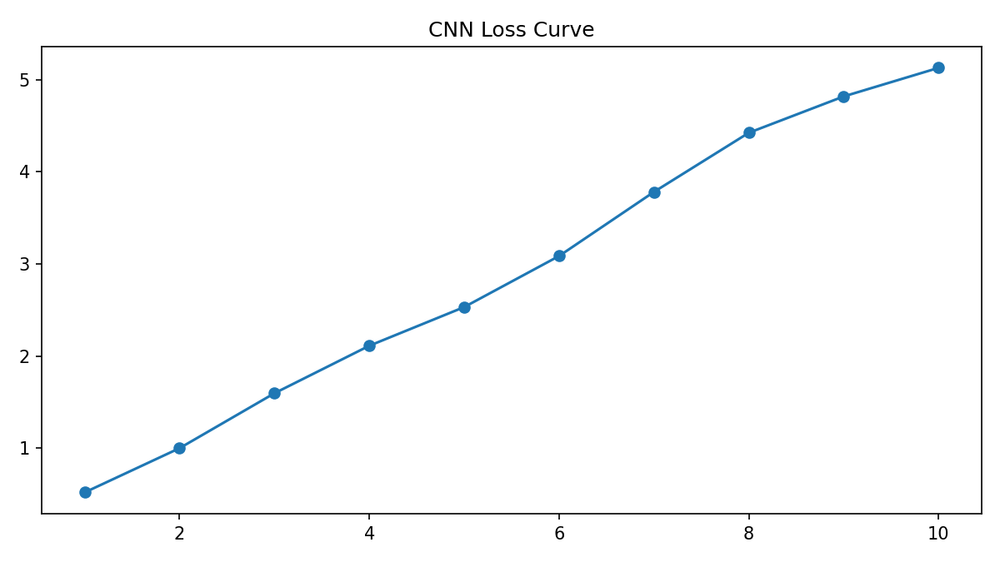
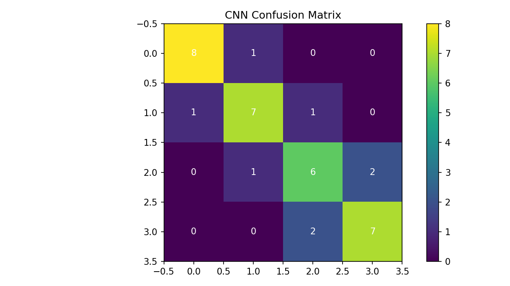

CNN Object Recognition Project
This page summarises the convolutional neural network work completed for the image classification task. The project used the CIFAR-10 dataset and combined a CNN approach with transfer learning. The presentation reported training accuracy of around 80 per cent, validation accuracy of around 74 per cent and test accuracy of around 75 per cent. It also emphasised the role of validation, early stopping and learning-rate scheduling in controlling overfitting. fileciteturn1file1
Dataset and pipeline
- 60,000 images across 10 classes
- Image size of 32 by 32 pixels
- Normalisation and augmentation used in preprocessing
- Validation used to guide tuning and reduce overfitting
Approach
- Convolutional neural network for feature extraction
- Transfer learning using MobileNetV2
- Adam optimiser with early stopping and learning-rate scheduling
- Evaluation through accuracy, loss and confusion matrix review
Critical evaluation
The CNN model showed that deep learning can outperform more traditional approaches when the task requires feature learning from images. However, the results also showed the limitations of the approach. Small image size and class similarity created ambiguity for several classes, and the confusion matrix made it clear that performance was not equally strong across the dataset. This matters because overall accuracy can hide class-level weakness. The project therefore reinforced the importance of looking beyond headline metrics when evaluating model quality.
My own contribution centred on interpreting the results, identifying the strengths and limitations of the approach, and presenting the model outputs in a way that connected technical findings to practical implications. The task strengthened my understanding of how validation and tuning support generalisation, and how transfer learning can improve efficiency when training resources are limited.

Accuracy curve showing the gap between training and validation performance.

Loss curve showing learning behaviour over training epochs.

Confusion matrix used to identify stronger and weaker classes.